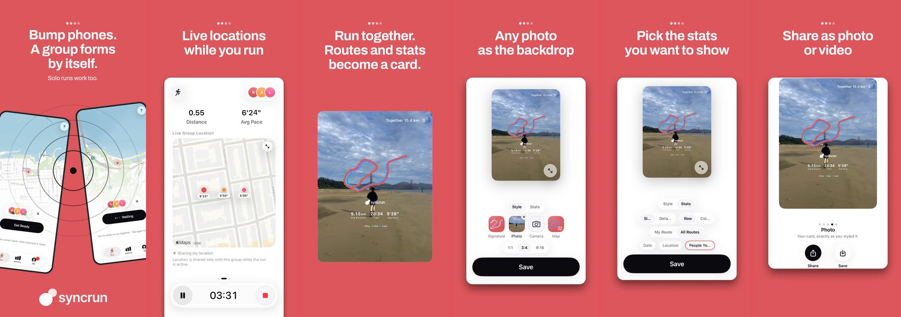

SyncRun
SyncRun Labs · 2026년 9월 App Store 출시
요약
휴대폰을 맞대면 그 자리에서 함께 뛸 그룹이 만들어지고, 함께 뛴 기록이 한 장의 러닝 카드로 남는 러닝 앱. 혼자 뛰기와 그룹 뛰기는 별도 모드가 아닌 하나의 흐름.
문제
기존 러닝 앱은 기록은 남기지만 함께 뛴 경험은 남기지 못함. 크루 출석과 출발은 사람이 직접 맞추고, 함께 뛴 기록은 각자의 앱에 흩어짐.
그림

주요 기능
- UWB 근접 판정으로 맞댐 그룹 생성. 기존 그룹에 한 명 추가, 두 그룹 합치기 지원
- 준비 카운터와 서버 기준 시각에 맞춘 전원 동시 출발
- 러닝 중 그룹 실시간 현황(거리·페이스·지도), 응원, 음성 안내
- 연결이 끊겨도 기록 무손실, 전원 종료 시 그룹 결과 완성
- 러닝 카드 자동 생성과 편집·공유
- Apple·Google 로그인, Apple Watch, 잠금 화면·위젯, 한국어/영어
구현
- GPS·걸음 수 융합 거리 측정. 위치 정확도가 좋은 구간에서 보폭 계수를 학습하고, 위치가 끊기면 걸음 거리로 보완. 튀는 좌표 격리, 정지 상태 표류 억제
- UWB 맞댐 판정. 최근 샘플 3개의 중앙값을 진입 1.0m / 이탈 1.4m 이중 임계값으로 판정, 거리별 유지 시간 적용
- 동시 출발 시각 보정. 연결 직후 시각 동기화를 3회 측정해 왕복 시간이 가장 짧은 표본의 시각 차이 채택
- 러닝 중 지표를 디스크에 원자적으로 기록하는 저널로 크래시 후 복구. Socket.IO 프레임 처리기 직접 구현
구조
- iOS: SwiftUI, CoreLocation, CoreMotion, NearbyInteraction(UWB), HealthKit, ActivityKit, WidgetKit, WatchConnectivity
- Android: Kotlin, Jetpack Compose, WorkManager, Firebase
- 서버: NestJS, Prisma, PostgreSQL, Socket.IO 실시간 세션(이벤트 21종), APNs·FCM 푸시
- 인프라: Terraform으로 GCP 서울 리전 구성(Compute Engine, Cloud SQL, Secret Manager, Cloud Monitoring). GitHub Actions에서 키 없이 GCP 인증 후 staging → prod 배포
- 데이터: 오프라인 우선. 기기 안 저장이 1차, 서버는 백업·기기 간 전파·그룹 결과 조립 담당
기여
6개 저장소 커밋 1,011개 중 565개(약 56%). 서버 88/112, 인프라 35/41, Android 123/124, iOS 162/445, 웹 40/70.
테스트: 서버 유닛 41개·e2e 15개 파일, iOS 67개 파일.